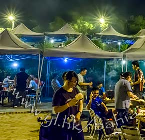

Location & Map
位置及地圖
Opposite Tai Mei Tuk New Beach. Directions and map link in one place. 位於大美督新泳灘對面，方向及地圖連結集中顯示。
Open map 查看地圖 →Tai Mei Tuk, Tai Po · 大埔大美督
Enjoy premium charcoal BBQ with free parking, beach access, and a clear pricing guide. 享受優質炭火燒烤、免費泊車、泳灘位置及清晰收費資訊，方便到訪前規劃。
Key tasks identified in our user evaluation are now organised into clear sections. 根據用戶評估所得的主要任務，現已整理成清晰分區。
Opposite Tai Mei Tuk New Beach. Directions and map link in one place. 位於大美督新泳灘對面，方向及地圖連結集中顯示。
Open map 查看地圖 →Structured pricing table by day, duration, and guest type. 按日子、用餐時長及客人類別整理收費表，減少混亂瀏覽。
View pricing 查看收費 →Submit your visit details with form validation. Groups of 30+ can request a custom quote. 透過表格提交到訪資料並即時驗證，30人以上團體可申請報價。
Book now 立即預訂 →Working phone links and WhatsApp enquiry are provided. 提供可用電話連結及 WhatsApp 查詢，改善原網站聯絡連結失效問題。
Contact us 聯絡我們 →Filter photos by environment or customer experience before visiting. 到訪前可按環境或顧客體驗分類瀏覽相片。

Short reviews help users build confidence before booking. 簡短評價可增加用戶預訂前的信心。
“The parking information is clear and the BBQ area is close to the beach.”
「泊車資訊清楚，燒烤區亦鄰近海邊。」
Family visitor 家庭客人“Good for group gathering. The booking form makes it easier to confirm numbers.”
「適合團體聚會，預訂表格方便確認人數。」
Group organiser 團體負責人“I can check available time slots before making an enquiry.”
「我可以先查看可預訂時段，再決定是否查詢。」
First-time visitor 首次到訪客人Steps from Tai Mei Tuk New Beach. Swim, park, and BBQ in one trip. 鄰近大美督新泳灘，一次過安排游泳、泊車及燒烤。
Long-lasting heat so you can focus on enjoying the meal. 炭火持久，讓客人更專心享受燒烤。
Multiple choices for vegetarian guests and varied dietary needs. 提供素食及不同飲食需要的選擇。